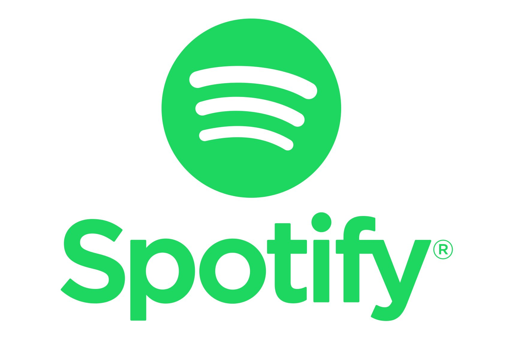

Taylor Swift is an iconic singer-songwriter, performer, and superstar who needs no introduction. Renowned around the world, Swift debuted in 2006 and has since wrote and performed music spanning genres, from country to electronic, resonating with fans throughout various moments from dawn to midnight. The wide reach of her music is reflected in its popularity too. This past year, Swift achieved a record of holding all top ten slots on Billboard’s coveted Hot 100 chart. This incredible feat is also reflected on music streaming platforms too, as Swift became the most streamed artist on Spotify in 2023, hitting 26.1 billion streams.
Beyond the success of Swift’s music, Swift’s Eras tour during the summer of 2023 further catapulted her into a cultural phenomenon as she created and filled a blank space in pop culture. Swift’s Eras tour did not just shake the world, but also grossed nearly US$800 million. This financial success attests to the dedication of her fan base, who spent an average of $1,279 per show (Bhattarai, 2023). Furthermore, the film adaptation of the ‘Eras Tour’ debuted at US$96 million in box office sales (Bohannon, 2023). The success of Swift beyond music not only highlights Swift’s musical prowess but also her ability to captivate a global audience across different platforms.
As self-proclaimed and aspiring Swifties, we cannot shake off our love for Swift. Swift’s popularity also means that there is an abundant amount of data surrounding her music, which we aim to analyze in this project. Specifically, this project analyzes features of Swift’s music provided by music streaming platform Spotify and discussions about Swift’s music on Reddit. Through this project, we hope to learn more about Swift’s music and impact on its audience, which will help us gain a deeper understanding of Swift’s work and legacy.
To explore this topic, our research relies on data from two influential digital platforms: Reddit and Spotify. Reddit is a platform where users share and exchange opinions and news on various subjects. Reddit contains many subreddits, each of which is focused on a specific topic, making it a useful source of data for specific topics. Reddit’s online community includes people from diverse backgrounds and interests, allowing them to come together to discuss, share insights, and learn about a wide array of subjects. The other digital platform, Spotify, is a major music streaming platform that contains a large catalog of music. Users of Spotify can listen to music created by artists around the world.
Data from these two sources help us learn more about the Reddit community’s response to Swift’s music. Specifically, we explored the r/TaylorSwift subreddit to delve into Taylor Swift’s presence on Spotify. Through our research, we aim to explore the characteristics of Swift’s music, emotions expressed in songs, themes in Reddit comments, and the Reddit community’s reaction to Swift’s music. Building on this exploration, our project analyzes language patterns in comments, public sentiment towards Swift’s music and its difference from the features of Swift’s music, and any potential cyberbullying present in Reddit discussions about Swift. Finally, this project uses predictive modeling to predict comment controversiality and song popularity. Through our approach, we aim to unravel Taylor Swift’s music and her influence on contemporary culture.
1.EDA: Analyzing User Engagement Trends on r/TaylorSwift
Business goal: Enhance comprehension of user engagement patterns within the r/TaylorSwift subreddit by visually elucidating significant events’ impact on submissions and comments. The aim is to provide a user-friendly representation for stakeholders without a technical background, facilitating an intuitive understanding of the community’s activity during pivotal moments.
Technical proposal: Commencing with data extraction and processing, we will utilize the ‘created_utc’ column for submission count and ‘retrieved_on’ for comment count. Leveraging Python’s Plotly library, we’ll craft a dynamic line chart featuring two traces for submissions and comments. The chart will be designed for visual appeal and interactivity, incorporating hover templates for detailed insights. Key events like album releases and tour announcements will be annotated, adding context. The chart’s layout prioritizes accessibility and simplicity, ensuring it resonates with a non-technical audience.
2.EDA: Weekend-Weekday Engagement on Reddit for Taylor Swift
Business goal: The primary objective is to offer a comprehensive overview of Reddit engagement throughout the week, with a specific focus on comparing hourly activity between weekdays and weekends. By discerning patterns in user activity during different hours and days, the goal is to provide a clear understanding of peak engagement periods. This information will be valuable for non-technical stakeholders, enabling them to grasp the optimal times for community interaction on the r/TaylorSwift subreddit.
Technical proposal: The technical approach involves extracting timestamp details to identify hours and days, facilitating the grouping of data based on hours to calculate the total comments per hour. Additionally, we will introduce a new column, ‘is_weekend,’ to classify days as either weekdays or weekends. The ensuing summary table will encapsulate essential metrics such as total activity, average activity, and day-of-the-week categorization. Subsequently, we plan to leverage Altair to transform this summary into an interactive scatter plot. The plot will dynamically illustrate average comment counts, total activity, and their fluctuations throughout various hours, providing an intuitive exploration of engagement trends on Reddit.
3.EDA: What are characteristics of Swift’s music?
Business goal: Explore audio features of Swift’s music, which will help us gain a better understanding of Swift’s music features. Through this, we hope to identify any trends or patterns in audio features that may contribute to the wide resonance of Swift’s music. These insights will help many businesses, including helping agents select emerging talent with similar audio features in music, and promote artists who have similar audio features to a similar audience.
Technical proposal: This business goal will be explored using the Spotify dataset, as the dataset contains scores of Swift’s music for each audio feature out of 1.0. The features we will examine are instrumentalness, acousticness, liveness, valence, danceability, energy, and speechiness. We plan to first hypothesize what are some features that we expect Swift’s music to score high at. Use Plotly and other libraries, we will create a correlation heat map and radar plot of Swift’s music’s audio features. Then, we plan to examine the plots and highlight certain audio features that seem intriguing or worthwhile to explore further, if any.
4.EDA: What does the emotion of the song look like?
Business goal: Explore and analyze the emotions expressed in the songs. Especially because Swift’s fanbase is extremely strong, this will help us understand any trends in Swift’s songs’ emotions, such as if her more popular songs have a certain emotion. This will help us target Swift’s music to different audience groups better.
Technical proposal: This business goal will be explored using the Spotify dataset, as the dataset contains scores of Swift’s music for each audio feature out of 1.0. The features we will examine are instrumentalness, acousticness, liveness, valence, danceability, energy, and speechiness. In the Spotify dataset, we will specifically examine the ‘energy’ and ‘valence’ variables to calculate the emotional categories, since we determine ‘energy’ and ‘valence’ to be audio features that have the strongest indication of a song’s emotion. We will create a new variable, “Emotion”, to categorize each song into four distinct emotional categories: ‘Fear,’ ‘Joy,’ ‘Sadness,’ and ‘Calm.’ We will display the rating of this variable in a table and analyze trends or patterns in “Emotion” across Swift’s songs.
5.EDA: How does reddit community react to Taylor’s original version and Taylor’s version songs?
Business goal: Compare the taylor swift’s songs of both her versions (original and taylor’s version). This has strong business implications, because the reason why Taylor Swift re-recorded her older music is so that she can have complete legal, distributive, and creative control over her music. By understanding differences in popularity of her music in the original and re-recorded vesions, we can better understand if re-recording music also stimulates interest from fans.
Technical proposal: For this business goal, we will use both the Reddit and Spotify datasets. To compare the Reddit community reaction on the popularity of both her versions of songs, which are original version and taylor’s version. First, we will create a plot that shows a snapshot of the Reddit community’s response to Taylor Swift’s original songs for her top 20 tracks. Next, we will create a plot that shows a snapshot of the Reddit community’s response to Taylor Swift’s re-recorded songs for her top 20 tracks. We will compare these two plots and see if there are any differences between the two.
6.NLP: How Do User Comments Reveal Language Patterns?
Business goal: Explore language patterns and connections between words in user comments. Identifying significant bi-gram relationships will help us uncover how frequently such word pairs are utilized by authors within the comments and understand any underlying patterns in users, which will help us understand Swift’s fanbase on Reddit.
Technical proposal: We plan to conduct a bi-gram network analysis on user comments extracted from the ‘body’ column of the dataset. To achieve this, we will start with data preprocessing, cleaning, and tokenization to prepare the text for analysis. After that, we will identify and extract significant bi-gram relationships, offering insights into word pair patterns utilized by authors. Leveraging PySpark for efficient data processing, NLTK for text preprocessing, and NetworkX for network construction, we aim to create visual representations that enable us to uncover intricate language connections.
7.NLP: How does the public feel about Swift’s music?
Business goal: Analyze sentiment and emotions of those responding to Swift’s music. Understanding the sentiment and emotion of users responding to Swift’s music will help us gain a better understanding of how Swift’s music makes others feel. If we worked on Swift’s creative team, we can employ these results to inform the creation of Swift’s future music.
Technical proposal: First, we clean data: lemmatize and remove stop words and special characters, and convert text data to a bag-of-words corpus using the NLTK library. Then, we use the NLTK library to analyze sentiment of each comment. First, we use the DocumentAssembler, a critical component that helps assemble the text data and produces a “document” output column. Next, we use a Universal Sentence Encoder to encode sentence-level text. Then, we apply SentimentDLModel to the sentence embeddings produced by the USE model. It assigns sentiment labels to each sentence, indicating whether the sentiment expressed is positive, negative, or neutral. This stage allows us to understand the overall sentiment of individual sentences within the comments. Finally, we employ emotion classification with the ClassifierDLModel that has been pretrained with emotion data, providing data with four emotion categories—“fear,” “joy,” “sadness,” and “surprise”. Based on the results, we will analyze the sentiment and emotions of each line.
8.NLP: How does public sentiment towards Taylor Swift’s music differ from audio features of Taylor Swift’s music?
Business goal: Extract sentiment of each album using the Spotify dataset and compare that to sentiment extracted from comments on posts of the same album. These comparisons will enable us to better understand how Swift’s music’s audio features are, and how that compares to how people feel about her music. This can help us understand, for example, the differences between how a song’s musical features are intended and what impact it creates on the audience.
Technical proposal: This business goal will require both the Spotify and Reddit datasets. First, the flairs part of the Reddit dataset will be used to group by and concatenate every comment for each album in the dataset. The we will use Spark NLP to for sentiment analysis. This dataset will be merged with the external dataset (Spotify) using album name. Before merging, sentiment of each album will be calculated in the Spotify dataset. These two sentiments will then be compared for further analysis.
9.NLP: How Can Cyberbullying in Taylor Swift’s Online Community be Addressed to Foster a Safer and More Respectful Environment?
Business goal: Understand cyberbullying in public discourse around Taylor Swift. Cyberbullying is a prevalent challenge in online forums, as individuals may feel further masked by the increased distance between individuals and anonymity of the online community. Often times, celebrities with different identities experience pronounced discrimination, highlighting existing discrimination against the groups that these celebrities are in. Therefore, we want to understand the presence of and trends in cyberbullying within the r/TaylorSwift subreddit, especially in discussions related to Taylor Swift and her music, and understand how we can better safeguard the online community to promote healthy, safe discussions.
Technical proposal: Implement the Spark NLP cyberbullying classifier to identify texts in the following categories: Racism, Sexism or Neutral. First, we will assemble textual data sourced from the “body” column of our dataset to prepare the text data for subsequent NLP analysis by converting it into a standardized format. Second, we will use the Universal Sentence Encoder (USE) by leveraging a pre-trained Universal Sentence Encoder known as ‘tfhub_use.’ This encoder transforms assembled text documents to numerical embeddings. These embeddings encapsulate the semantic essence of the text, representing the content’s meaning in numbers. Next, we will use a pre-trained ClassifierDLModel, ‘classifierdl_use_cyberbullying,’ to discern instances of cyberbullying within text data. It takes the sentence embeddings generated by the USE model as input and categorizes each document into one of the predefined categories: racism, sexism, or neutral. Finally, to streamline and automate the entire process, we will construct a pipeline that encompasses the document assembler, USE model, and document classifier.
10.ML:Predict if the comment is controversial or not
Business goal: Predicting if the comment posted under a submission for r/TaylorSwift is controversial given its sentiment and emotion. This is helpful because if many comments are deemed controversial, that implies that there may be some heated or potentially toxic or unhealthy exchanges in the r/TaylorSwift subreddit. Further examination of those comments can help us see if the suspected controversy is surrounding any of Swift’s songs, which can help Swift’s team flag any problems in her music’s lyrics or other aspects
Technical proposal: First, we plan to balance data by removing certain values if the missing values only affect a small sample size. Then, with the balanced data, we will split data into training and testing sets, and use the supervised learning technique (classification) to train models. We will select three distinct models: Logistic Regression, Decision Tree, and Random Forest. We will also conduct hyperparameter tuning to ensure that we can improve on the accuracy of the models. Finally, we will evaluate and compare the models’ performance with metrics like accuracy, precision, and recall.
11.ML: Predicting Song Popularity from Subreddit Comments
Business goal: The objective is to define comment popularity within the subreddit by focusing on the comments’ score. Establishing a threshold for comment popularity will provide insights into community preferences and engagement.
Technical proposal: Our technical approach involves extracting key features such as comment content, sentiment, emotion, and controversiality. Subsequently, we plan to build a classification model using supervised learning techniques. The dataset will be split into training and testing sets, and three distinct models – Logistic Regression, Decision Tree, and Random Forest – will be explored. The data will be labeled based on the defined popularity threshold, and the chosen model will be trained using the extracted features. Model performance will be evaluated using classification metrics, and a comprehensive feature importance analysis will be conducted to identify key contributors to song comment popularity.
Our first dataset consists of Reddit data from the r/TaylorSwift subreddit. Reddit is a widely used social media platform where users share content and engage in discussions on various topics. A subreddit is a community that centers around a specific topic. Since our project analyzes public responses to Taylor Swift, we were interested in the r/TaylorSwift subreddit. We retrieved data from Azure Blob Storage using PySpark.
Our second dataset consists of data on audio features of Taylor Swift’s music from music streaming platform Spotify. We retrieved data from Spotify using the Spotify Web API and specified “Taylor Swift” as the keyword in the ‘artist’ field. This data source provides us with comprehensive insights into her music, including album details, track information, popularity metrics, and user-generated playlists.

The Reddit Dataset comprises 1,974,887 rows of comments and submissions related to Taylor Swift. It includes details such as the username of the comment author, comment content, timestamps, upvote counts, and subreddit affiliations. Table 1 details all variables in the Reddit data.
The Spotify Dataset shows audio features and corresponding ratings of Taylor Swift’s music from 2006 to 2023. The 39 music features include danceability, energy, key, loudness, and speechiness. Table 2 details all variables in the Spotify dataset.
Combining both datasets offers an understanding of Taylor Swift’s online presence and music characteristics, helping us explore Taylor Swift’s impact on both the digital and musical landscapes and derive meaningful insights.
To ensure the quality and suitability of our Reddit and Spotify data for analysis, we executed several crucial data preparation steps. Initially, we conducted a comprehensive review of each dataset, rectifying any data type discrepancies and addressing missing information while also verifying that there were no duplicate entries.
It is clear from Figure 1’s null bar plot of missing values that some columns—like “author_flair_text” and “author_flair_css_class”—have a disproportionately high number of missing values. However, in the context of big data, dropping these columns entirely may not be the best option.Furthermore, we excluded the “is_submitter” column because it was unimportant to our engagement analysis. These strategic column exclusions resulted in a refined dataset of 1,974,887 rows that was fine-tuned to meet our research objectives.
Now that our data has been carefully examined and improved, we can go deeper into the analysis. We will use the dataset to draw important conclusions, develop new variables, and carry out extensive exploratory analyses that will advance our understanding of the r/taylorswift data.
To understand how people interact with the Taylor Swift subreddit on Reddit, we look at when and how often people post and comment, especially on weekdays and weekends, at different times of day, as shown in table 3.
Now, let’s break down what’s in the table:
This table, which highlights peak community engagement at various times during the week, essentially offers a thorough view of hourly activity patterns during weekdays and weekends. The ‘weekend’ column categorizes each entry based on the day of the week, while the ‘avg_activity’ column ensures a fair comparison by taking total activity and dividing it by a constant.
After looking over comment activity hourly as well as weekday versus weekend activity, we’re getting ready to dive deeper into the “r/Taylorswift” subreddit. Our next step is to conduct a thorough review of the subreddit’s most engaging posts, specifically those with the highest comment counts, as shown in Table 4. This project promises to provide a comprehensive overview of the critical metrics associated with these posts in the thriving r/Taylorswift community.
This table serves as a valuable resource for gaining insights into the engagement and reception of different topics within the r/Taylorswift subreddit. Let’s break down the significance of each column:
The table delivers insights into the engagement and reception of various topics within the subreddit. The ‘Activity’ column reveals the number of comments each topic garnered, while ‘sum_score’ offers an aggregated measure of the topic’s popularity based on comment scores. ‘sum_gild’ demonstrates the level of user appreciation through gilding, and ‘sum_contro’ highlights the occurrence of controversial comments within each topic. The ‘permalink’ column includes the link to the top post linked with each topic.
We have chosen to concentrate our attention on the top 20 posts, which were chosen based on the quantity of contentious comments, in order to obtain a deeper understanding of the comments. This detailed information is presented in Table 5, where each row corresponds to a post and provides key data points such as the total score (‘sum_score’), total gilded comments (‘sum_gild’), total controversial comments (‘sum_contro’), and a permalink for each post. This table is a great resource for identifying posts that have sparked significant debate and controversy in our community.
Take, for instance, the post named “midnights_leaks_discussion_only,” which has stirred considerable discussion and controversy. It boasts a high comment count (21,245), a substantial sum of scores (154,257), and highest number of controversial comments, positioning it among the top posts in terms of controversial engagement.
With regard to our Spotify data, we aligned the temporal range with our Reddit comment dataset, which spans 2021–2023. We were able to investigate temporal relationships and extract significant insights thanks to this temporal alignment, which matched our Reddit data that started in 2021 with ease.
Furthermore, to sharpen our analytical focus, we carefully refined the Spotify dataset by selectively excluding certain columns. Columns such as “artist_id” and “artist_name” were removed because they contained redundant information about our main subject, Taylor Swift. Similarly, “album_images” were considered unnecessary because they were unrelated to our goal of understanding public reactions to Taylor Swift’s music. In addition, technical and URL-related columns like “analysis_url” and “track_uri” were purposefully removed. While useful in other contexts, these columns did not align with our specific research goal of examining public perceptions of Taylor Swift’s music. A final dataset with 194 rows and 23 columns that was carefully selected to support our analytical efforts was the result.

Table 6: Summary Statistics for the Spotify Dataset, Offering Insights into Taylor Swift’s Music Characteristics. These statistics reveal key audio features of Taylor Swift’s songs, such as danceability, energy, and tempo, allowing for a comprehensive understanding of her musical style.
The Spotify summary statistics (Table 6) of Taylor Swift’s songs offer a concise overview of her musical style. Her music strikes a balance between danceable tracks (mean danceability: 0.585) and more subdued compositions. With an energy level averaging at 0.574, she adeptly navigates between high-energy anthems and mellower ballads.
Taylor Swift’s willingness to experiment with different tonal centers is reflected in the varied key values (mean key: 4.572), demonstrating her adaptability. The average loudness of -7.505 dB reflects her attention to audio quality. Her emphasis on storytelling through lyrics and vocals is also highlighted by lower speechiness (mean: 0.056) and instrumentalness (mean: 0.004).
Additionally, her music exhibits a moderate level of liveness (mean: 0.163), suggesting a blend of studio and live recordings. The valence, indicating emotional tone, hovers around 0.395 on average, showcasing her ability to convey diverse feelings. With an average tempo of 122.332 BPM, her music caters to a broad range of rhythmic preferences.
Table 7: Emotion Classification for Taylor Swift’s Songs in the Spotify Dataset. This categorization adds an emotional dimension to her music, allowing us to explore the varied emotional states conveyed in her songs, from joy and calmness to fear and sadness
Furthermore, we have added an interesting addition to the Spotify dataset. We’ve added a new categorical column called “Emotion” to our data (Table 7) to help us better understand the emotional nuances in Taylor Swift’s songs. This new ‘Emotion’ column is a powerful tool for categorizing songs into four distinct emotional categories: ‘Fear,’ ‘Joy,’ ‘Sadness,’ and ‘Calm.’ The values extracted from the ‘Energy’ and ‘Valence’ columns were meticulously assigned to these categories.
The ‘Energy’ and ‘Valence’ values, integral components of Spotify’s audio analysis, hold the key to unraveling the emotional landscape woven into Taylor Swift’s music. By evaluating these values, we gain valuable insights into the emotional tones and atmospheres that characterize her songs. This improvement gives our analysis more depth and allows us to examine the deep emotional implications of Taylor Swift’s songs.
With the modified data in hand, we’re ready to dive into the development of visualizations(EDA code) that will provide deeper insights into Taylor Swift’s music and the Reddit comments surrounding it. These visual representations will be powerful tools for uncovering intriguing patterns and gaining a deeper understanding of Taylor Swift’s songs as well as the sentiments expressed about them on Reddit. Visualizations, like numbers, have the unique ability to reveal even more intricate details.
To begin, we’ll look at the comments on the “r/taylorswift” subreddit. We’ll start by creating a word cloud, which will show the most frequently used words in these comments in a visual format. This word cloud will provide us with an initial glimpse into the subreddit’s community’s common themes and topics.
The frequently used terms and subjects in the r/TaylorSwift community are displayed in Figure 2, the WordCloud.’Taylor,’ the well-known persona, clearly represents Taylor Swift herself, and she is a major discussion point. Words like “think,” “song,” and “love” crop up frequently, emphasizing the thoughtful and passionate nature of the conversations and the emotional bond that fans have with her music. Furthermore, the noteworthy presence of ‘album’ suggests an active engagement with Taylor Swift’s discography, indicating that users often discuss and analyze her albums, contributing to a vibrant and dynamic community dialogue.
Now, let’s delve into the time series data of comments and submissions, enabling us to trace the evolution of engagement on Reddit over time. This analysis will provide valuable insights into the dynamics of the r/TaylorSwift community and how it has evolved over the course of its existence.
From the time series plot (Figure 3), it’s evident that the Reddit community was already actively discussing the popstar. However, there was a noticeable increase in submissions following the release of Taylor Swift’s ‘Taylor’s Version’ of her album ‘Red’. This increase in engagement was only the beginning. We can also observe that there was a rise in comments on February 28, 2022 (#SwiftiesForLeni), primarily due to the Filipino crowd’s rendition of the hit song “All Too Well (Taylor’s Version)” in support of Leni Robredo, the country’s vice president at that moment. With the release of ‘Midnights,’ there was a significant increase in both submissions and comments, indicating a jubilant response from her fan base to the new album. However, this surge was dwarfed by the overwhelming demand for Eras tour tickets when they became available. The sheer volume of comments, which reached around 300,000, surrounding the Eras tour ticket sales suggests a level of fervor that could have strained the Reddit community, potentially causing disruptions.
It’s worth considering whether the excitement surrounding the tour tickets contributed to a significant impact, possibly even causing temporary outages on Reddit. This remarkable level of engagement suggests that Taylor Swift’s concert events have a seismic impact, not just metaphorically, but potentially also digitally.
Now that we’ve grasped the concept of comment evolution, let’s turn our attention to hourly activity, as shown in Table 3.
The data clearly shows that Reddit users engage in a distinct pattern based on weekdays and weekends. The trend indicates that there is a significant increase in activity during the weekdays, particularly in the intensity of comments, as shown in Fogure 4. This could be due to users being more likely to participate in discussions, possibly during work or leisure hours, demonstrating a higher level of interaction.
Weekends, on the other hand, appear to see a drop in participation as users may be more inclined to engage in outdoor activities or take a break from their computers and devices. The observed decrease in engagement during weekends reflects the notion that weekends are reserved for leisure and fun.
Essentially, the plot illustrates how Reddit usage is dynamic, with weekdays being the busiest times for intense and intense conversations and weekends being less active. This perceptive pattern clarifies the ebb and flow of user interaction and offers helpful background information for comprehending the Reddit community’s temporal dynamics.
With our comprehension of the Reddit data improved, let’s investigate the Spotify data, which will help us come up with better ideas for the Taylor Swift songs.
The correlation heatmap, Figure 5 reveals intriguing relationships among the audio features of Taylor Swift’s songs. Notably, there is a strong positive correlation between energy and loudness, indicating that her more energetic tracks tend to be louder, a connection that aligns with musical intuition. Conversely, a compelling negative correlation emerges between speechiness and acousticness, implying a trade-off between spoken content and the presence of acoustic instrumentation. This suggests that when her music leans towards spoken word elements, it tends to reduce its reliance on acoustic qualities. Additionally, the moderate positive correlation between valence (positivity) and energy underscores that her songs with higher energy levels tend to convey a more positive emotional tone, a dynamic that resonates with listeners seeking uplifting musical experiences. Furthermore, the correlation heatmap highlights the interplay between danceability and tempo, revealing that while faster-paced songs are less danceable, slower-paced tracks tend to invite more danceability, an observation that adds depth to the understanding of her music’s rhythmic characteristics.This hints that she strikes a balance between spoken and acoustic elements in her music.
We’ll explore Taylor Swift’s audio features in greater detail in the future. This Correlation Heatmap opens the door to a deeper examination of her musical qualities. Looking past the details, it becomes clear that energetic music frequently contributes a positive emotional atmosphere. So let’s set out on a new journey of discovery into Taylor Swift’s musical universe.
By displaying the mean values of her musical attributes, Figure 6, provides important insights into Taylor Swift’s unique musical style. Taylor Swift’s songs, on average, display a remarkable combination of characteristics that connect with her audience. Her music is notable for having a lively and energetic vibe, with high scores in danceability, energy, and tempo, indicating an innate ability to craft tracks that inspire movement and enthusiasm. Furthermore, as evidenced by the high valence score, her compositions consistently maintain a positive and joyful emotional tone.
Despite the emphasis on energy and liveliness, Taylor Swift artfully balances her musical narratives with lower speechiness and instrumentalness scores, highlighting her dedication to melodic storytelling and lyrical depth. The moderate levels of acousticness and liveness showcase her versatility in blending digital and acoustic elements while preserving a sense of dynamism. Altogether, these characteristics illuminate Taylor Swift’s enduring appeal as an artist who not only creates chart-topping hits but also crafts emotionally resonant songs that connect with a diverse and devoted fanbase worldwide.
We now turn our attention to the emotions conveyed within Taylor Swift’s albums and songs, delving deeper into the realms of energy and valence..
The emotion plot presented in Figure 7 effectively depicts the most common emotional themes found in Taylor Swift’s discography. Her songs clearly evoke feelings of joy and intensity, which are labeled “Joy” and “Fear” respectively. These feelings are consistent with her ability to create catchy, energetic songs that emotionally connect with listeners. Taylor Swift’s artistry, however, extends beyond surface emotions, as she skillfully explores deeper, introspective themes, as evidenced by the significant representation of “Sadness” songs. While “Fear” songs were prevalent in albums from various years, the year 2022 stood out for the prevalence of “Sad” songs in albums such as “Midnights,” implying a thematic exploration of deeper and more introspective emotions at the time.
An interesting pattern emerges when examining the song counts broken down by album and year in more detail. Every album seems to take listeners on a trip through a variety of emotions, with some focusing on particular emotional nuances. This range of emotions is evidence of Taylor Swift’s skill as a songwriter; it enables her to write songs that connect with a broad listener, whether they are inspirational anthems, intense displays of passion, or moving meditations on life and love. In the end, her music’s emotional depth is what makes her a cherished and relatable artist to listeners of all ages.
Now that we’ve visualized both the Reddit data related to Taylor Swift and the Spotify data for Taylor Swift’s songs, it’s time to combine these datasets to gain a better understanding of the popularity of Taylor Swift’s songs within the Reddit community.
|
|
|
As part of her attempts to reclaim ownership of her discography, Taylor Swift released the Taylor’s Version of her songs. She had previously had ownership problems with her master recordings, which were sold without her permission. She made the decision to rerecord her earlier albums in order to take back control and ownership of her work, allowing her to become the owner of the new master recordings.
Let’s now examine the songs’ popularity by contrasting the top 20 tracks from Taylor Swift’s rendition with the original song. In the original version, as shown in Figure 8.i, a few songs in the extremely unpopular category trail all of her top 20 songs in terms of popularity in Reddit comments. Interestingly, all five of the top songs are in the popular category. Examining Figure 8.ii of Taylor’s Version, we note notable modifications. Because people frequently don’t clarify whether they are talking about the original song or Taylor’s version, there are fewer comments on these songs. Unless they are die-hard Swift fans, it’s likely that most listeners don’t care which version they hear.
Additionally, we observe that the original versions have a greater number of comments than the Taylor’s Version. This might be the case because some listeners only care about the music and aren’t interested in learning more about the background of Taylor Swift’s reclaiming her back catalog. They don’t care about the transfer; they just like her songs. Examining individual songs in greater detail reveals that “Red” is not as well-liked in Taylor’s rendition as it was in the original. On the other hand, “Fear” is one of the songs that is most well-liked in the Taylor’s Version.
Our exploratory data analysis (EDA) revealed the exciting world of Taylor Swift’s music and response from the Reddit community. First, we examined the comments and engagement patterns on the r/TaylorSwift subreddit. Second, we identified the highest-scoring authors and posts, leaving the context on the subreddit’s influential voices and popular content. This analysis not only adds to our understanding of the Reddit community’s interactions, but also lays the groundwork for a more in-depth examination of Taylor Swift’s digital impact. This helped lay the foundation for a more comprehensive understanding of Taylor Swift’s cultural impact, connecting her music with the public via the digital platforms Spotify and Reddit.
After conducting a thorough Exploratory Data Analysis (EDA) to obtain a thorough understanding of the data from both the Spotify Taylor Swift dataset and r/taylorswift, we are now prepared to move on to the next stage, which is the NLP analysis.
Our achievements in this area have been crucial to achieving our goals concerning the public’s opinion of Taylor Swift and the active participation of our community. We have identified the primary themes in user comments and have improved our understanding of what people are saying with the use of advanced tools. This keeps our community more lively and courteous while also providing us with insights into people’s opinions about Taylor Swift’s music.
Additionally, we have performed sentiment analysis to determine the general public’s attitude toward Taylor Swift’s music, which has given us important insights into how people view her work. We’ve also gone so far as to compare the sentiment that the Reddit community expressed with Taylor’s emotional perception in her albums, which has allowed us to find some interesting patterns and trends.
With regard to the problem of cyberbullying, we have been able to recognize and group texts into pertinent categories like sexism, racism, and neutral content by using the Spark NLP cyberbullying classifier. This promotes a more secure and polite online environment in addition to helping to comprehend the conversation in the public sphere surrounding Taylor Swift.
The depth of our comprehension of Taylor Swift’s influence on her fan base and the nature of her music-related internet conversations has been made possible by our NLP achievements. These observations will direct our data-driven decision-making to improve user engagement and guarantee a better online experience for every member of our community.
Now, let’s take a closer look at the NLP models, their implementation, and the process of discovering and developing them (NLP code).Our focus begins with the NLP Processing Pipeline for Text Data Cleaning, which involves the following steps. Within this section, we have designed a Natural Language Processing (NLP) pipeline to refine the text data extracted from comments. The refined text has served as the core component for subsequent analyses, encompassing tasks such as sentiment analysis, identification of common keywords, and the generation of tailored summaries to address our specific business objectives.
The pipeline comprises several essential text preprocessing steps, including:
The primary goal of using these techniques is to improve the quality and relevance of the text data. Thus, the groundwork for drawing significant conclusions from the analysis’s later phases has been laid.
To underscore the impact of our preprocessing steps, we have included visualizations in the plots below (Figure 9). These visualizations offer a clear before-and-after perspective, illustrating the changes in comment quantity and comment length resulting from the NLP pipeline’s text cleaning process.
|
|
|
The bar plots provide insights into the relationship between the number of comments and the length of comments (represented by the body column) in the r/taylorswift subreddit, both before and after conducting text cleaning and natural language processing (NLP).
Prior to any data manipulation (Figure 9.i), it becomes apparent that there is a notable pattern. Specifically, a high number of comments tend to occur when the comment length is relatively short. In contrast, when the comment length becomes considerably longer, the number of comments dwindles, often to just one or two. This pattern suggests a preference among users for shorter comments, leading to higher comment frequency, while longer comments are less common and tend to receive fewer responses. This could indicate that the community values brevity and concise interactions, possibly driven by the nature of the content or user preferences.
After conducting text cleaning and NLP on the data (Figure 9.ii), it becomes evident that a significant portion of the original comment content has been removed or modified. However, the key observation remains consistent with the previous plot: there is a strong correlation between comment length and comment frequency. Specifically, we continue to observe that a higher number of comments are associated with shorter comment lengths, while conversely, fewer comments are generated for longer comments.
This consistency in the observation reinforces the idea that the r/taylorswift subreddit community values brevity and concise interactions, even after text cleaning and NLP processes have been applied to the data.
With our cleaned comments in hand, our next step involves delving deeper into the content. We achieve this through TF-IDF analysis, a method that enables us to pinpoint the most vital keywords within our text data. This technique plays a crucial role in quantifying the significance of words within our dataset, offering valuable insights into the content’s key themes and relevance.
The word cloud displayed in Figure 10 provides valuable insights into the language patterns and key themes present within the cleaned comments of the r/taylorswift subreddit. The word cloud showcases a mixture of positive and negative words, reflecting the diverse sentiments expressed by the community. Furthermore, well-known terms like “tickets” and “album name” imply conversations about concert tickets, and Taylor Swift’s albums are frequently discussed subjects in the subreddit.
Based on their maximum TF-IDF scores and corresponding word counts within the comments, the top 20 keywords are shown in Figure 11, an Altair bar chart that was generated to illustrate their relative importance. This chart offers information about the relevance of keywords within the dataset.
In this chart, ‘taylor’ stands out as the most prominent keyword, boasting a maximum TF-IDF score of 48.99. This score highlights how frequently the word appears in the comments and how important it is to the discussions. ‘Make’ and ‘want’ also have notable TF-IDF scores, indicating that they are important concepts in the discussions.
The consistency of maximum TF-IDF scores across the top 20 keywords is especially noteworthy. Despite their differences, all of these keywords have the same maximum TF-IDF score. This high degree of consistency suggests that these particular keywords occupy similarly notable and significant positions throughout different documents, underscoring their steadfast significance within the text data under analysis. The chart also shows some interesting patterns. A few keywords show high TF-IDF scores but relatively low word counts, like ‘nominationawards’ and ‘uphold,’ indicating that they are specific within the dataset. On the other hand, terms that are more widely used, like “fan,” “listen,” and “artist,” have a balance between their word counts and TF-IDF scores, indicating their importance and widespread usage in the discussions.
It’s important to note that a higher TF-IDF score indicates that the word is both frequent within a specific document (or comment) and rare across the entire dataset, highlighting its significance within that particular context.
To help us understand this phenomenon better, we have used a figure that depicts how these TF-IDF scores are distributed. This figure provides a thorough overview of the number of keywords with identical scores, illuminating the overall pattern and possibly revealing underlying trends in our dataset.
In order to determine whether the uniformity in scores is constant across several keywords or whether there are variations that can add more context to our analysis, we looked at the distribution of max_tfidf_score, figure 12.
The most notable finding is the prevalence of keywords clustered around a max_tfidf_score of about 6.801720, with a significant count of 6192. This concentration indicates that a large number of keywords have similar importance levels. Figure 12’s distinct popularity at the score of 6.801720 corresponds perfectly with the dataset’s peak count. Furthermore, the table emphasizes the variation in importance levels among various keywords. Several max_tfidf_score values have lower counts, indicating differences in significance. These variations reflect the distinct characteristics of each keyword, which include factors such as frequency and rarity within the dataset.
The figure highlights the range of max_tfidf_score values, which includes a maximum score of approximately 49.759974 with a count of 473 and a minimum score of approximately 0.711994 with a count of 58. This wide range highlights the varying degrees of importance assigned to keywords, allowing for a more nuanced and comprehensive interpretation of the dataset.
Before proceeding to sentiment analysis, let’s explore the connections between key words within the comments to identify significant bi-gram relationships. This analysis aims to uncover how frequently such word pairs are utilized by authors within the comments.
Several key observations appear from the network plot (Figure 13). At first glance, it is clear that the majority of the bi-grams have a relatively balanced distribution in terms of their frequency of co-occurrence (often represented as the ‘n value’). These bi-grams are scattered across the plot, forming clusters and connections that represent common language patterns found in the comments.
However, it’s important to note that the network plot focuses specifically on bi-grams with counts exceeding 100. This deliberate selection allows us to present a clearer and more focused analysis within this subset of the data. By doing so, we prioritize the most significant and frequently occurring word pairs, enhancing the interpretability of the plot and avoiding clutter.
However when we examine the plot more closely and focus on particular areas, we see eye-catching patterns with vibrant #9678b6 coloring. This bright #9678b6 color shows that some word pairs are connected substantially more often than others. Because of their high ‘n value,’ these noteworthy bi-grams appear to be frequently and prominently utilized by authors in the comments.
Some notable examples of such highly connected bi-grams include ‘taylor-swift,’ ‘feel-like,’ ‘perform-automatically,’ ‘perform-action,’ and others. These word combinations are central hubs in the network, suggesting that they hold particular significance within the discussions taking place in the dataset. They are likely associated with recurring themes, discussions, or sentiments that resonate strongly with the community.
These highly connected bi-grams are prominent, which highlights their function as key phrases summarizing key points in the discussion within the r/taylorswift subreddit. We are able to learn a great deal about the most common language patterns and subjects of interest among the commenters by locating and analyzing these central hubs.
We can move on to sentiment analysis now that we have a better understanding of the r/taylorswift comments. We will be able to examine the sentiment and emotional tone of the comments through this analysis, which will give us important insights into the thoughts, opinions, and responses of the community. We have established an extensive Natural Language Processing (NLP) pipeline in order to perform sentiment analysis on the r/taylorswift comments. This pipeline consists of several steps that are intended to efficiently process and evaluate the text data.
Document Assembly: We initiate the process by utilizing the DocumentAssembler, a critical component that helps assemble the text data. This stage takes the “text” column as input and produces a “document” output column. This initial step is essential for structuring the text data for subsequent analysis.
Universal Sentence Encoder: Next, we make use of the English-language-specific Universal Sentence Encoder (USE) pretrained model. Sentence-level text is encoded using the USE model, producing rich, context-aware sentence embeddings. Sentiment analysis is based on these embeddings, which capture the text’s subtleties and semantic meaning.
Sentiment Analysis with SentimentDLModel: We integrate the SentimentDLModel pretrained with Twitter data into the pipeline. This model is applied to the sentence embeddings produced by the USE model. It assigns sentiment labels to each sentence, indicating whether the sentiment expressed is positive, negative, or neutral. This stage allows us to understand the overall sentiment of individual sentences within the comments.
Emotion Classification with ClassifierDLModel: We also make use of the ClassifierDLModel that has been pretrained with emotion data. This model makes use of the sentence embeddings produced by the USE model, just like the sentiment analysis step. Nevertheless, it employs four emotion categories—“fear,” “joy,” “sadness,” and “surprise”—instead of sentiment labels to categorize sentences and reveal the text’s emotional content.
An NLP pipeline contains the sentiment analysis procedure in its entirety. Sentiment analysis using SentimentDLModel, emotion classification using ClassifierDLModel, document assembly, and Universal Sentence Encoder application comprise the four main stages of this pipeline. We can quickly and effectively analyze and interpret the sentiment and emotional content found in the r/taylorswift comments thanks to this structured approach, which also helps to illuminate the sentiments and emotional expressions of the community.
Now that we have access to the sentiment data, we set out to understand how the Reddit community’s sentiment has changed over time. We divide the community into three categories to help us make sense of this journey: “fans,” “anti-fans,” and “neutrals.” Positive comments go into the “fans” category, negative comments into the “anti-fans” category, and neutral comments stay in the “neutral” group. These divisions are based on the opinions stated in the comments. We can learn fascinating things about the tide of opinions in the community regarding the discussions around the r/taylorswift subreddit thanks to this classification. Now that we have a basic understanding of sentiment analysis, lets look at the distributuon of emotion and reddit community.
The sentiment analysis of comments within the r/taylorswift subreddit, Figure 14 reveals the sentiment dynamics of the community. The subreddit community was categorized into three primary groups: “fans,” “anti-fans,” and “neutral,” based on the sentiments expressed in comments. The largest group, “fans,” predominantly consists of members expressing positive sentiments and showing support for the subreddit’s subject matter, contributing a substantial count of 11,966 comments. In contrast, “anti-fans” represent the second-largest group, with 5,102 comments, indicating a presence of individuals who express negative sentiments and often offer criticism. A smaller group of “neutral” commenters, contributing 1,011 comments, remains relatively impartial, reflecting a lack of strong positive or negative emotions.
Furthermore, the sentiment analysis categorizes comments into four distinct emotion categories: “fear,” “joy,” “sadness,” and “surprise.” This classification reveals the emotional diversity within the r/taylorswift subreddit discussions. While the “fans” and “anti-fans” groups represent different sentiment poles, emotions such as “sadness” and “fear” appear in the analysis with counts of 5,001 and 4,531 comments, respectively. Additionally, “surprise” and “joy” emotions are also observed in the subreddit, with counts of 4,388 and 4,159 comments, respectively. This diversity of emotions underscores the complexity of discussions within the community, where members engage with a wide range of emotional responses.Now that we know how the Reddit community and emotion classes are distributed, let’s examine how they change over time.
A time series analysis of the Reddit community for r/taylorswift over time is shown in Figure 15, and it shows some interesting trends in sentiment and engagement.The analysis categorizes comments into three main groups: fans (positive sentiment), anti-fans (negative sentiment), and neutral comments.
From the visualization, it is evident that fans, represented by the highest comment count, consistently dominate the conversation over time. This dominance is aligned with their positive sentiment, indicating their active and enthusiastic participation in discussions related to Taylor Swift. Anti-fans, with a negative sentiment, follow in terms of comment volume, reflecting their engagement in expressing criticisms or negative opinions about Taylor Swift or her work. This group maintains a consistent level of activity over the observed period.
What’s particularly interesting is the peak in comments from fans (positive sentiment) in December 2022, which represents a substantial increase since June 2022. This surge in positive engagement suggests a notable uptick in enthusiasm and conversation within the fan community during that period. It is likely attributed to the “Eras” tour by Taylor Swift, which generated significant excitement and discussions among her devoted fanbase. This tour, characterized by its unique and special events, contributed to the heightened enthusiasm and increased activity within the r/taylorswift subreddit.
Now that we have a better understanding of how Reddit comments evolve over time, let’s look at how different emotions evolve over time.
According to the time series analysis for r/taylorswift shown in Figure 16, the emotion class’sadness’ has a notable peak in December 2022. This surge in sadness reflects a significant emotional response in the community during the era’s tour. The primary factor contributing to this collective feeling of sadness is likely related to the ticket sales for the Era’s Tour. Many Swifties were left disheartened as the tickets sold out rapidly, and a substantial number of them were unable to secure tickets. This ticket scarcity, combined with high ticket prices averaging around $1200, which is a substantial expense for many people in the US, likely contributed to the prevailing sense of disappointment and sadness within the community during that period. However, it’s important to note that this heightened sadness coexists with substantial levels of ‘joy,’ ‘fear,’ and ‘surprise.’ The presence of these diverse emotions suggests that December 2022 was a multifaceted month for the r/taylorswift subreddit, marked by a complex interplay of emotions.
The multifaceted emotions observed in December 2022, including the peak in ‘sadness,’ ‘joy,’ ‘fear,’ and ‘surprise,’ can be primarily attributed to the Taylor Swift tour. This dynamic emotional landscape likely reflects the diverse and passionate responses of fans to the tour’s events, album releases, and related discussions within the r/taylorswift subreddit.
Now that we’ve established the history of both the Reddit community and the emotion classification over time within the r/taylorswift subreddit, we’ll look at them together. We will explore the classification of comments within the Reddit community and their corresponding emotional classifications, providing a comprehensive understanding of the relationship between community sentiment and emotional expressions.
We can see how different sentiment groups in the r/taylorswift subreddit express their emotions using the sunburst plot (Figure 17). Fans who support Taylor Swift appear to have a diverse emotional range, with’surprise’ being the most frequently expressed emotion. This could be because fans frequently react with excitement and wonder to Taylor Swift’s actions, such as surprise album releases or unexpected announcements. It is also expected that ‘joy’ will be prevalent among fans, as they are likely to derive happiness and enjoyment from Taylor Swift’s music and updates.
On the other hand, anti-fans, who lean towards a negative sentiment, primarily convey ‘sadness.’ This could be due to disagreements, criticisms, or frustrations they may have with Taylor Swift or her work. The presence of ‘fear’ among anti-fans might suggest the concern related to Taylor Swift’s actions or influence. The limited expression of ‘joy’ and ‘surprise’ among anti-fans could be because these emotions are typically associated with positivity, which may not align with their sentiment towards Taylor Swift.
Interestingly, the neutral category demonstrates a notable prevalence of ‘sadness’ as well. This may indicate that even those with a neutral sentiment in the subreddit tend to express negative or melancholic emotions in their comments. The presence of ‘fear’ and ‘surprise’ might suggest that these neutral individuals are still emotionally engaged in discussions related to Taylor Swift, even if they do not express overtly positive or negative sentiments.
Following our exploration of the r/taylorswift subreddit’s comments, we now turn our attention to Taylor Swift’s albums. These albums were extracted from the data’s “author_flair_css_class” column, and after thoroughly cleaning the column, we were able to successfully extract the names of Taylor Swift’s albums.
The Reddit community and emotion class distribution by Taylor Swift album,Table 8 offers intriguing insights into the emotional dynamics of the subreddit’s discussions. One notable trend is the prevalence of anti-fans in many album categories, particularly associated with emotions like ‘fear’ and ‘joy.’ This could indicate that anti-fans are actively engaged in expressing their emotions, often leaning toward both negative and positive sentiments.
On the other hand, ‘neutral’ sentiments are evident for the ‘Lover’ album, suggesting a segment of the community that maintains a balanced or indifferent stance when discussing this particular album. This diversity in emotional responses implies that ‘Lover’ may evoke a more mixed range of feelings among Reddit users compared to other albums. Moreover, the album ‘1989’ stands out with a substantial presence of ‘sadness’ within the anti-fans category, suggesting that this album might have elicited more negative or melancholic emotions among anti-fans compared to other Taylor Swift albums.
Now that we have a better understanding of the feelings and opinions of the Reddit community regarding each of Taylor Swift’s albums, let’s move on to using Spotify data to analyze the feelings connected to her albums.
In the Spotify Taylor Swift Album emotion,Table 9 we observe a diverse range of emotions associated with Taylor Swift’s albums. From the joyous tones of “1989” to the more somber emotions in albums like “evermore” and “folklore,” each album seems to evoke a distinct emotional landscape. Additionally, we can identify that fear is a recurring emotion in several of these albums, suggesting the presence of intense and emotionally charged tracks within Taylor Swift’s discography.
Now that we’ve explored Reddit community sentiments and emotions for Taylor Swift’s albums and the emotions in her Spotify albums, lets look at what happens, when we compare both the emotions. We’ve integrated external data, based on the “album_name” column, and in the case of Spotify data, employing a mode-based approach to discern the overarching emotional essence of each album, derived from the emotions expressed in individual songs.We hope to achieve a comprehensive understanding of how the emotional landscape of the albums aligns and contrasts with the sentiments articulated within the comments pertaining to these albums by integrating these external data sources, Spotify data.
Taking into account the emotions expressed in Reddit comments (Reddit emotion based on comments) as well as the emotional tone gleaned from Spotify songs (Spotify emotion based on songs), the Treemap visualization (Figure 18) provides a rundown of Taylor Swift’s albums. Firstly, it’s evident that ‘anti-fans’ are prominently represented in the majority of the albums, particularly associated with emotions such as ‘fear,’ ‘sadness,’ and ‘joy.’ This suggests that anti-fans actively engage in discussions about Taylor Swift’s music, encompassing a wide range of emotional responses.
The album ‘Lover’ stands out with ‘neutral’ sentiment from the Reddit community, indicating a balanced or indifferent response from fans. However, when considering Spotify data, it aligns with a ‘joyful’ emotion, reflecting a more positive emotional tone conveyed by the songs in this album. This intriguing contrast highlights the potential for differing emotional interpretations of the same content.
On the other hand, ‘fearlesstv’ and ‘folklore’ albums demonstrate an interesting combination of emotions. While anti-fans associate ‘fear’ with these albums in Reddit comments, Spotify suggests a contrasting ‘sadness’ sentiment. This disparity in emotional perception could be attributed to varying interpretations of the albums’ themes, lyrics, or musical styles.
Having explored critical aspects, including the discussions within the r/taylorswift subreddit, the spectrum of emotions expressed by the Reddit community, the emotional dimensions of Taylor Swift’s albums, and the corresponding reactions from the Reddit community, we now shift our focus to a pressing concern: cyberbullying within the r/taylorswift subreddit. Our objective is to gain a comprehensive understanding of this issue, examining its presence and impact within the community.
Cyberbullying is a concerning issue that extends beyond specific Reddit communities, affecting the platform as a whole. On Reddit, cyberbullying can manifest in various forms, including harassment, hate speech, personal attacks, and even doxxing (revealing someone’s private information without consent). It often occurs in the form of toxic comments, downvoting campaigns to bury a user’s contributions, or organized harassment efforts targeting individuals or groups. Therefore, we wanted to understand the presence of cyberbullying within the r/TaylorSwift subreddit, especially in discussions related to Taylor Swift and her music. In this section, we have pre-trained model designed for the classification of cyberbullying content within the r/taylorswift subreddit. Our primary goal is to identify instances of cyberbullying, with a specific focus on categorizing them into three distinct categories: racism, sexism, and neutral interactions.
We used natural language processing (NLP) components and a deep learning model to understand cyberbullying in r/TaylorSwift:
Document Assembler: We assembled textual data sourced from the “body” column of our dataset. This initial step prepares the text data for subsequent NLP analysis by converting it into a standardized format.
Universal Sentence Encoder (USE): We leveraged a pre-trained Universal Sentence Encoder known as ‘tfhub_use.’ This encoder transforms assembled text documents to numerical embeddings. These embeddings encapsulate the semantic essence of the text, representing the content’s meaning in numbers.
Document Classifier: To accomplish the classification task, we deploy a pre-trained ClassifierDLModel, ‘classifierdl_use_cyberbullying.’ This model has undergone fine-tuning to discern instances of cyberbullying within text data. It takes the sentence embeddings generated by the USE model as input and categorizes each document into one of the predefined categories: racism, sexism, or neutral.
Pipeline: To streamline and automate the entire process, we constructed a pipeline that encompasses the document assembler, USE model, and document classifier.
Using this method, we aim to understand the extent and types of cyberbullying in the r/taylorswift subreddit.
Comments are classified into three distinct categories: racism, sexism, and neutral interactions. The comments are shown in Table 9, and related categories can be viewed if you scroll to the very right. It is critical to acknowledge that the process of categorizing comments into these groups, which is aided by advanced natural language processing (NLP) components and a deep learning model, is not perfect. While these computational tools have shown impressive proficiency in comprehending and analyzing textual data, they are not without limitations.
Take, for example, a comment that the classifier might have classified as “sexism” just because it contained the word “sexier.” It’s important to remember that the term “sexier” is frequently used in a variety of contexts unrelated to sexism. It seems to be describing various colors in this particular comment, which highlights a limitation in the classifier’s comprehension of complex language and context. This incident highlights the larger difficulty NLP models have in picking up on minute details. Words linked to sensuality or attractiveness are commonly used to describe women, especially female celebrities like Taylor Swift, which could cause false positives in the classification process. Interestingly, in this instance, the discussion appeared to be about colors rather than Taylor Swift at all, and it may have something to do with her album “Red.” This highlights the ongoing need for refinement and context consideration in the classification process and serves as a reminder that, despite its many benefits, the classifier is not perfect and may not always capture the intended meaning of comments.
Around 89% or 16k of the posts in this subset are classified as “neutral”, indicating that there was no cyberbullying sentiment detected (Figure 18). Given several of the posts within this subset are from when Taylor Swift’s 2023 Eras Tour tickets when on sale, where Ticketmaster crashed, we were somewhat surprised at the high proportion of comments that were neutral because we assumed given the level of interest surrounding this tour, as well as the anonymity provided by the internet, there would be more negative comments about Taylor Swift mixed with discrimination, than there were.
Nearly 2k, or 11% of comments, that were classified as sexist (Figure 19). Unfortunately, this was jarring but did not surprise us. From questions levied at Swift about her personal life that probably would not be targeted at male celebrities, to other remarks, Taylor Swift is unfortunately no stranger to sexist comments as a woman and public figure.
Using these findings, we can construct a better understanding of discrimination in the r/TaylorSwift community. The relatively high amount of neutral comments is a relief, though it is important to note that the model only attempts to capture sexist or racist discrimination. There are many other types of discrimination, such as age, ability, and class, that are not represented here. It is alarming that the model identified 11% of the comments are sexist. This result goes to show the strides we need to continue making as a community to call out sexist comments and promote diversity, equity, and inclusion (DEI). By being a public figure and vocal advocate of feminism, Taylor Swift has undoubtedly helped make advances in advancing DEI, and we hope that these results can encourage us all to acknowledge discrimination and safeguard our communities against discrimination.
Conducting analysis in Natural Language Processing (NLP) helped us gain a better understanding of public response to Swift’s music. First, using bi-gram network analysis, we unveiled interesting relationships between words and word pairs that members of the Reddit community frequently use. This gave us important information about their common language and interests, deepening our understanding of the community. In addition, we conducted sentiment and emotion analysis to determine how the general public feels about Taylor Swift’s music. This analysis showed that Swift’s music resonates with a range of emotions, from joy and intensity to introspection. We also contrasted public response with the emotional aspects of Swift’s albums using Spotify data and found a prevalence of anti-fans in many album categories, particularly those associated with emotions like ‘fear’ and ‘joy.’ This could indicate that anti-fans are actively engaged in expressing their emotions, often leaning toward both negative and positive sentiments. Finally, we ran a cyberbullying classifier and unveiled that most comments are classified as neutral while around 11% of comments are classified as sexist. These findings will help us understand Swift’s impact on the online community and foster an inclusive online community.
After gaining insights from sentiment analysis, we’ve shifted our focus to developing a machine learning model(ML Code). Our primary goal is to predict whether a comment is controversial or not. To achieve this, we started by addressing missing values in the dataset and balancing the data.
We found that only 12% of the values in the ‘retrieved_on’ column were missing. While it’s common to drop rows with missing data, we’ve chosen a different approach due to the unique nature of the ‘retrieved_on’ column.The ‘retrieved_on’ column represents a time-series, and although the missing values are relatively low, removing them could potentially impact the performance of our machine learning model. Instead of discarding rows with missing values, we’ve made the decision to exclude the entire ‘retrieved_on’ column from our dataset. This decision is based on the understanding that the time-series information is not essential for the initial classification model.
Additionally, we’ve noticed that approximately 2% of the values in the ‘sentiment’ and ‘emotion_class’ columns contain missing data. Given the small percentage of missing values, removing these rows is unlikely to significantly impact the overall dataset. Furthermore, it’s important to acknowledge that when both ‘sentiment’ and ‘emotion_class’ values are null for a comment, it suggests that there was likely no original comment, resulting in null values generated by the Spark NLP pipeline.
Moving forward, we assessed the balance of our data for modeling and observed a significant class imbalance in the ‘controversiality’ target variable. Specifically, class 0 had 1,787,032 instances, while class 1 had only 28,385 instances. To address this imbalance, we chose to employ the downsampling technique. While downsampling can potentially lead to information loss, the large size of our dataset allows us to mitigate this concern effectively. By downsampling the majority class to match the minority class’s count, we aimed to create a more balanced distribution of labels. As a result, we reduced the dataset to approximately 28,000 rows, which we consider sufficient for training our model.
With the balanced dataset in hand, we split the data into training and testing sets, following an 80% training and 20% testing split for modeling. Additionally, we performed data transformations for training. This involved converting textual comments into numerical vectors using techniques like TF-IDF or Word Embeddings and one-hot encoding categorical variables such as ‘sentiment’ and ‘emotion_class.’ These transformations enable us to represent text data numerically, ensuring compatibility with machine learning algorithms.
For Model Selection, we’ve strategically chosen three distinct models: Logistic Regression, Decision Tree, and Random Forest. Each of these models brings its unique strengths and characteristics to the table. To ensure that our models perform at their best, we’ve delved into the process of hyperparameter tuning. Hyperparameters are settings that govern how a machine learning model learns from the data. Fine-tuning these hyperparameters is a critical step to optimize predictive performance and enhance the model’s generalization ability. Now lets look at the results of these models and compare them.
Following the evaluation of three machine learning models—the Random Forest Classifier, Decision Trees, and Logistic Regression—we discovered unique trends in each model’s performance, as shown in Table 10. Logistic Regression demonstrated an accuracy of around 63.2%, yet it faced challenges in achieving a balanced trade-off between precision and recall, resulting in an F1 score of 0.593. Decision Trees, with an accuracy of approximately 50.8%, showcased a similar F1 score margin to Logistic Regression. In contrast, the Random Forest Classifier emerged as the standout performer, boasting the highest accuracy of about 64.2%. This model also achieved a balanced F1 score of 0.595. With these lets look the confusion matrix of all the three model, to understand the model better.
The confusion matrices, Figure 20 provides valuable insights into the classification performance of the models. In the case of Logistic Regression and Decision Trees, both models correctly classified 29% instances but made around 29% misclassifications, indicating a similar level of accuracy. On the other hand, the Random Forest model stood out with 30% correct classifications and 29.34% misclassifications. This slight edge in performance suggests that Random Forest demonstrated a slightly better ability to distinguish between controversial and non-controversial comments compared to Logistic Regression and Decision Trees. Let’s also look into the ROC Curve to further assess the model’s performance in distinguishing between classes. ROC curves are particularly helpful for understanding the trade-off between true positive rate (sensitivity) and false positive rate (1-specificity) at various threshold levels.
The ROC curve analysis,Figure 21 indicates that there is only a slight difference in performance between each model. However, when considering the area under the ROC curve (AUC) as the primary metric, the Random Forest model stands out as the best performer with an AUC of 0.64. This suggests that Random Forest excels in distinguishing controversial comments from non-controversial ones. Now’s lets look at teh feature importance if each model to understanding which features or variables have the most significant influence on the model’s predictions.
When we look at feature importance in different models,Figure 22 we see features for Logistic Regression have both positive and negative impacts. In Decision Trees, certain features exhibit relatively lower importance when compared to the comprehensive influence observed in Random Forest (visible when scrolling right). However, in the case of Random Forest, the majority of features display substantial importance scores. Interestingly, a consistent finding across all these models is the prominence of the ‘emotion_class’ feature, particularly emotions like ‘fear’ and ‘sadness,’ indicating their role in predicting controversial comments.
Among all the model, the Random Forest model emerges as the top performer, excelling in its ability to distinguish between controversial and non-controversial comments. It achieves an accuracy of 64%, and an F1 score of 0.59. Moreover, its AUC (Area Under the Curve) value of 0.64 further reinforces its strong performance. From this, we can conclude that, while the accuracy rate is not particularly high, it is dependent on people’s perspectives on the comment, whether they believe the comment should be controversial or not on the post, and whether dams, antifans of Taylor Swift would make it controversial or not.
In conclusion, the findings highlight the complexities of predicting controversial comments on the r/taylorswift subreddit. The model’s 64% accuracy rate reflects the subjective nature of controversy, which is heavily influenced by sentiments and dynamics specific to this Taylor Swift fan community. Even though the accuracy isn’t very high, it fits the subtleties of the online discussion in this particular subreddit. It confirms that the perceptions and affiliations of Taylor Swift’s supporters and admirers determine controversy in this particular context.
For our second machine learning model, we tried to predict the popularity of Reddit posts given a song or album name. First, we extracted posts that mentioned a song or album of Taylor Swift. Then, we created a “popularity” column, which is a binary column that indicates whether or not a post is popular based on its score. If the post’s score is greater than or equal to the median, then it is deemed popular and is given the rating of “2.0”. If the post’s score os lesser than the median, then it is deemed not popular and given the rating of “1.0”. Then, we prepared the data for machine learning. This involved conducting one-hot encoding of variables. We also balanced the dataset so that we have the same number of samples for each output of the target variable; in other words, we had the same number of samples for popular posts and for non-popular posts. We also split the data into training and test sets. Finally, using this cleaned data, we generated a random forest model that used song name and album name as feature variables, and popularity of the post as the target variable. Now lets look at the results of these models and compare them.
After evaluating three machine learning models, specifically Logistic Regression, Decision Trees, and Random Forest Classifier, we have discerned distinct patterns in their performance, as illustrated in Table 11. One notable observation is that all three models showcase similar levels of accuracy, achieving scores within the range of approximately 66.10% to 66.45%. This implies that they perform on par when it comes to making correct overall predictions on the test dataset. Furthermore, the test error rates for these models closely align, spanning from approximately 33.50% to 33.90%. While a lower test error rate is generally preferable, the modest discrepancies between these models suggest their comparable abilities in handling unseen data. Examining the F1 score, which provides a harmonious evaluation of precision and recall, reinforces the notion of similarity in performance. The F1 scores for these models cluster around the range of 0.6708 to 0.6730. In summary, our analysis indicates that there is not a substantial difference between the models’ performance. However, it is worth noting that under circumstances involving a very small proportion of the target class, the Random Forest model exhibits a slight advantage over the other two models. Let’s look at the confusion matrix to know how each model is performing with respect to classifying instances.
The confusion matrices, Figure 23 provides valuable insights into the classification performance of the models. In the case of Logistic Regression and Decision Trees, both models correctly classified approximately 31.54% and 31.82% respectively indicating a similar level of accuracy. On the other hand, the Random Forest model exhibited a slight advantage with 31.94% correct classifications. This marginal improvement in performance suggests that the Random Forest model demonstrated a slightly enhanced ability to distinguish between popularity and non-popular comments when compared to Logistic Regression and Decision Trees.
To make a determination regarding the best-performing model among the three, let’s turn our attention to the ROC curve. ROC curves provide a comprehensive view of the trade-off between the true positive rate (sensitivity) and the false positive rate (1-specificity) at various threshold levels, allowing us to make a more informed decision about model performance.
The ROC curve analysis,Figure 24 indicates that there is only a slight difference in performance between each model. However, when considering the area under the ROC curve (AUC) as the primary metric, the Random Forest model stands out as the best performer with an AUC of 0.69. This suggests that Random Forest excels in distinguishing popularity comments from non-popularity ones. To gain further insights into the models’ inner workings and understand which features or variables wield the most substantial influence on their predictions, the next step is to examine feature importance.
When examining feature importance across different models, as shown in Figure 25, we observe varying impacts on features. In the case of Logistic Regression, certain features exhibit both positive and negative influences on predictions. In contrast, in Decision Trees, some features appear to have only “contro_index” importance compared to the comprehensive influence observed in the Random Forest model (evident when scrolling right in the figure). Remarkably, in the Random Forest model, majority of features demonstrate significant importance scores when compared to the other two models. This suggests that Random Forest assigns more relevance to a broader range of features when making predictions. One noteworthy consistent finding across all these models is the prominence of the ‘emotion_class’ and ‘sentiment_class’ features, with a particular emphasis on emotions such as ‘fear,’ ‘negative,’ and ‘sadness’. Also we can’t ignore that controversial index places an important featire.
In conclusion, the findings highlight the complexities of predicting popularity comments on the r/Taylorswift subreddit. The model’s 66.45% accuracy rate reflects the subjective nature of popularity, which is heavily influenced by sentiments and dynamics specific to this Taylor Swift fan community. Even though the accuracy isn’t very high, it fits the subtleties of the online discussion in this particular subreddit. This result indicates that just because a song or album name is mentioned in a post, that does not mean the post is popular. This is because different posts can mention songs or album names in different contexts. For example, someone could have a Reddit post that details their well-reasoned, critical, and unique opinions on the “Red” album and asks for people’s input, which might lead to a high Reddit score. At the same time, we could have someone post very poorly justified, especially negative, opinions of the “Red” album, which might garner negative scores from the r/TaylorSwift community. There are many ways to post about a song or album, which might be one of the reasons why the model was unable to use song or album name to predict the popularity of the post. We can infer from this and also conclude that the popularity of a post mentioning a song or album may not align well with the popularity of the song itself. For further exploration, we could use the number of streams of a song or album, which serves as a direct measure of song/album popularity, as the target variable instead.
We built two machine learning models to better understand and predict components of the r/TaylorSwift subreddit, which helped us gain a better understanding of the Reddit community’s response to Swift’s music. First, we built a model that predicts whether a post will cause controversy in the r/TaylorSwift community. We identified possible controversial comments, which will help us promote more civil and constructive interactions among community members. We created a second model that predicted a post’s popularity based on song and album mentions. The model performed moderately, suggesting that song and album names are not great predictors of Reddit post popularity. This result indicates that just because a song or album name is mentioned in a post, that does not mean the post is popular. This is because different posts can mention songs or album names in different contexts. Our models show promising instances of using machine learning to predict controversiality and post popularity, though subtleties of online discourse and the role that music plays in influencing it must not be ignored.
Taylor Swift is one of the top artists in the world with an incredible fanbase of “Swifties” connecting with her music. This popularity is also reflected on online platforms too. This project explored the vibrant response of the online community to Taylor Swift’s music in the subreddit r/taylorswift.
First, the huge number of posts and comments on Reddit related to Taylor Swift reflects her popularity. When exploring these posts, we discovered that fans convey their feelings for her songs and her as a person too. In addition, anti-fans share their views on the platform, with many comments categorized with a negative sentiment. We also noticed a change in the number of comments and posts, as users comment more during special occasions such as her birthday, album release dates, announcement of the Era’s tour, and social events like #SwiftiesforLeni. These changes show that people don’t just comment on her controversies or her albums; they comment on her and how fans react to her songs in different moments or occasions.
Furthermore, we divided the Reddit community into ‘fans,’ ‘anti-fans,’ and ‘neutral’ based on sentiment analysis. There is a mix of comments from anti-fans and fans, indicating that there are both positive and negative comments on Reddit. This means that people who like Taylor Swift express favorable opinions, and those who think the opposite way express negative sentiments, indicating that there is a fair distribution of perspectives in the subreddit.
In addition to sentiment, we also classified audio features of Taylor Swift’s music as well as Reddit comments into ‘fear,’ ‘sadness,’ ‘surprise,’ and ‘joy.’ Many of Swift’s songs evoke feelings of “fear,” while some also express “sadness.” This mix of emotions mirrors her personal experiences and emotions throughout her career, from her teenage years to the early stages of her career, and later, songs that delve into her thoughts and emotions about her relationships. At the same time, for Reddit comments, there have been significant changes in the emotions within the Reddit community. For instance, in light of the Era’s tour, most #Swifties were excited for the tour, while many people expressed more sadness due to the high price of the tickets or inability to secure tickets as they sold out quickly. In a recent incident during the era’s tour in Europe, one fan passed away during a concert due to the heat and was not supposed to get water from outside. This tragic event also led to backlash against Taylor Swift.
We also know that controversy comes with fame; the more famous you become, the more opinions are lodged at you, and the more controversy may surround you. There is a subjective nature to controversy, heavily influenced by sentiments and dynamics specific to the Taylor Swift fan community. Therefore, after examining sentiment and emotions on the r/taylorswift subreddit, we created a prediction model that predicted whether comments sparked controversy, as well as if posts mentioning Taylor Swift’s songs or albums were more popular. Our models were able to predict the controversiality and popularity of a post based on song or album mentions. These predictions were tricky due to the nuanced and complex nature of what is deemed controversial, and how song popularity may not directly correlate to the popularity of an online submission mentioning that song.
As part of her efforts to reclaim ownership of her discography, Taylor Swift released the Taylor’s Version of her songs. She had previously encountered ownership problems with her master recordings, which were sold without her permission. She made the decision to re-record her earlier albums to regain control and ownership of her work. Both her original version and Taylor’s Version have been popular, but we noticed more popularity in the original version, perhaps because of a loss of newness with the re-recorded versions, and perhaps most people were not aware of differences in the Taylor Version. When considering both Taylor’s songs and Reddit community comments, anti-fans are prominently represented in the majority of the discussions, particularly associated with emotions such as ‘fear,’ ‘sadness,’ and ‘joy.’ This suggests that anti-fans actively engage in discussions about Taylor Swift’s music, encompassing a wide range of emotional responses.
Another aspect we analyzed in this project is cyberbullying. Cyberbullying on any platform is common, but there has been a growth in cyberbullying in general around the world. When it comes to this issue, some people do not support it, but there are individuals who engage in bullying for even minor reasons. This is evident as cyberbullying on r/taylorswift was classified into three categories: ‘neutral,’ ‘sexism,’ and ‘racism.’ Although not all comments are classified correctly, we have to consider the fact that NLP (Natural Language Processing) has its limitations of being a model and not being human. Overall, the model finds more neutral comments and some sexist comments, which suggests that people are generally, though not entirely, welcoming in the community. We hope that the sexist comments may be investigated further and decrease over time.
We would like to conduct more research on classification systems and improve upon the cyberbullying model we deployed. We also plan to examine specific flagged posts to check and verify comments labeled as sexist. Finally, we hope to share these findings openly and deliver them to relevant stakeholders, such as those at online platforms like Reddit, so that they can better understand how to create a safe space for people of all identities to share comments and interact online. As Taylor Swift claims, some people ‘need to calm down’ sometimes, and hopefully, our research in this area can help identify problematic users who violate online community policies.
Another angle in which we hope to expand our analysis is to explore better predictors of song popularity using text data from online forums. Our findings suggest that simply mentioning a song or album in a Reddit post may not reliably determine the post’s popularity, as context plays a significant role in how these references are perceived. However, could we predict a song or album’s popularity based on the popularity of posts mentioning it? As word of mouth greatly influences music promotion both online and offline, we seek ways to accurately predict song or album popularity based on text data. It would be valuable to obtain data on a specific song’s streams over time and overlay that with sentiment of posts about the same song, for example, and explore what predictive models we can deploy to predict the popularity of a song or album based on that data. Success in this area could offer valuable insights to various stakeholders, such as artist agents, production companies, and concert venues, helping logistical planning for tours and other events where music popularity has a direct impact on business. While this analysis could assist artists in understanding audience preferences, it is also important to prevent these predictions from stifling their creative expression. Our ongoing analysis in this area will require careful communication to ensure that while we improve music promotion, we do not impose limitations on artists’ creativity.
In conclusion, our exploration of Taylor Swift’s fandom and the digital world has been enlightening. We’re committed to making a positive impact at the crossroads of music, technology, and community, while respecting artists like Taylor Swift.